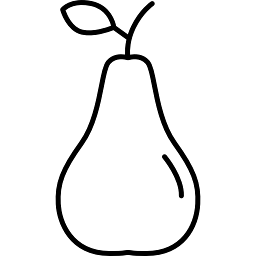
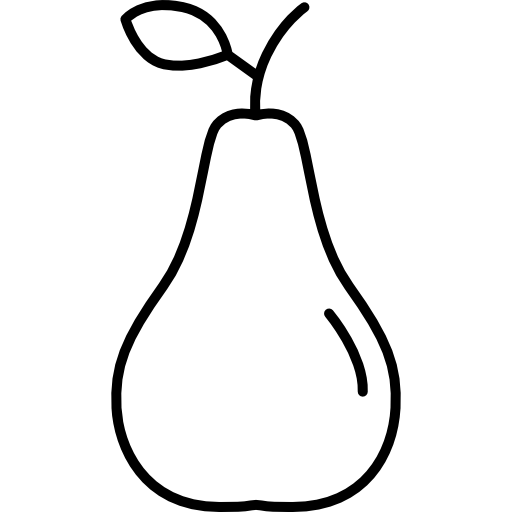

Vai uma fruta aí?Entenda mais sobre e veja os benefícios.
As frutas apresentam uma grande quantidade de componentes que beneficiam diretamente a saúde, como vitaminas, minerais e alguns compostos bioativos (flavonoides e carotenoides, por exemplo). Em virtude da grande quantidade de benefícios atribuídos às frutas, recomenda-se que uma pessoa faça a ingestão de 5 a 9 porções de vegetais e frutas por dia. Um baixo consumo de frutas está relacionado com o aumento do risco de desenvolver problemas cardiovasculares e alguns tipos de câncer.

Clique em alguma fruta abaixo para mais informações
 

| Fruta | Planta | Benefícios |
|---|---|---|
|
|
abacateiro | ele é importante para saúde do coração, intestino e olhos, além de ajudar quem quer emagrecer |
|
|
Morangueiro | fortalecimento do sistema imunológico, auxília no funcionamento do sistema digestivo, ação anti-inflamatória, auxilio na cicatrização de ferimentos |
|
|
laranjeira | Reduzir o colesterol alto, prevenir câncer de mama, manter a pele saudável e prevenir o envelhecimento precoce, fortalecer o sistema imune |
|
|
videira | Prevenção de problemas cardíacos, Melhora da saúde da visão, Controle da pressão arterial, Equilíbrio da glicose no sangue, Aumento da saúde do sistema digestório |